Routes that know your bike.
Map apps guess one speed for every cyclist. Pedalwise models your motor, weight and effort against every hill, traffic light and crossing, guides you there by voice and on your wrist, warns you before the rain and a flat battery, and keeps your bike in shape.
Everything your bike needs, in one app.
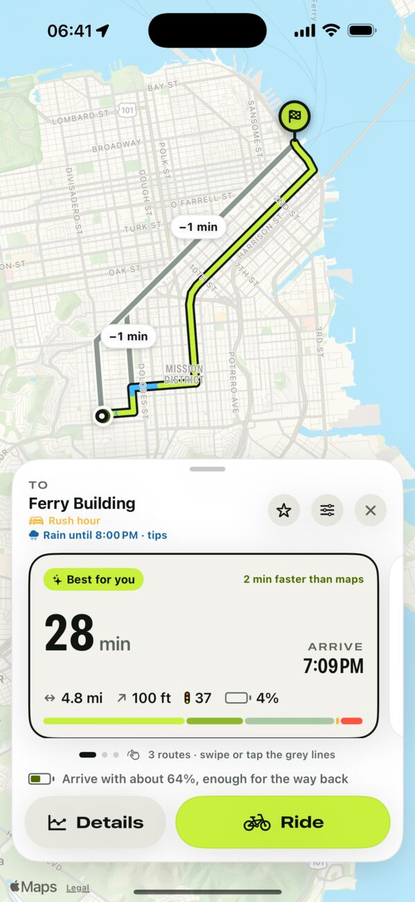
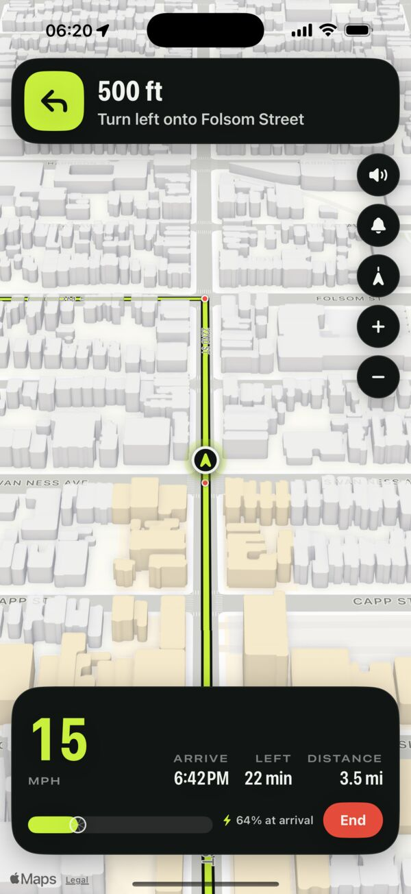
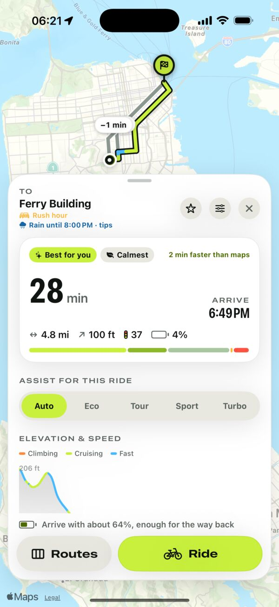
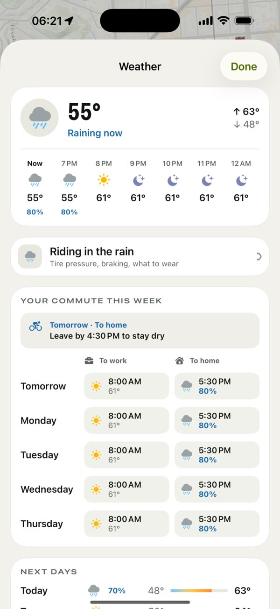
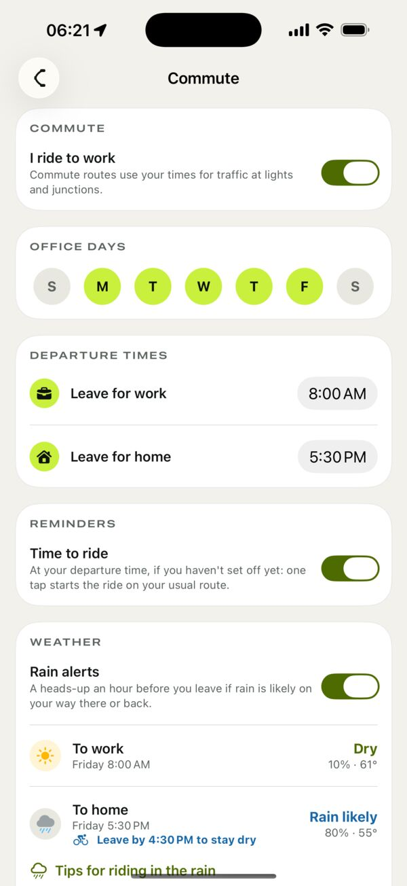
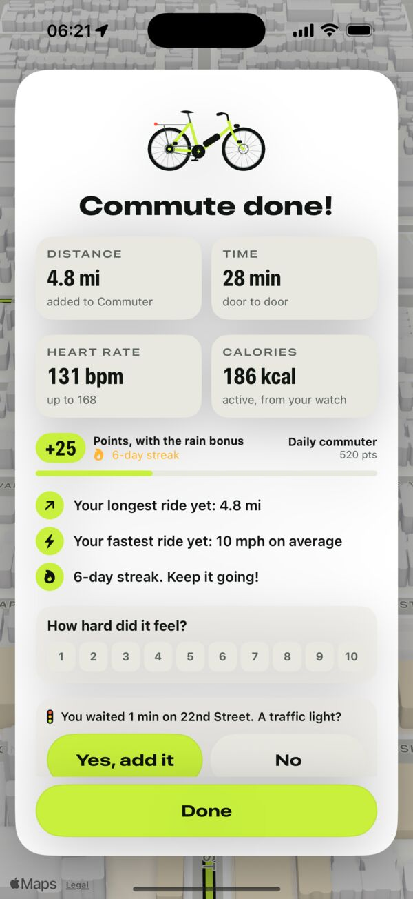
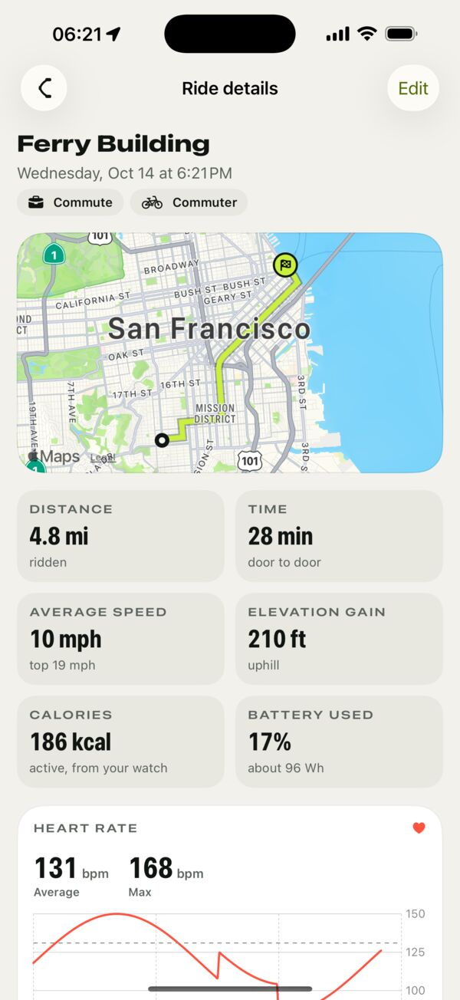
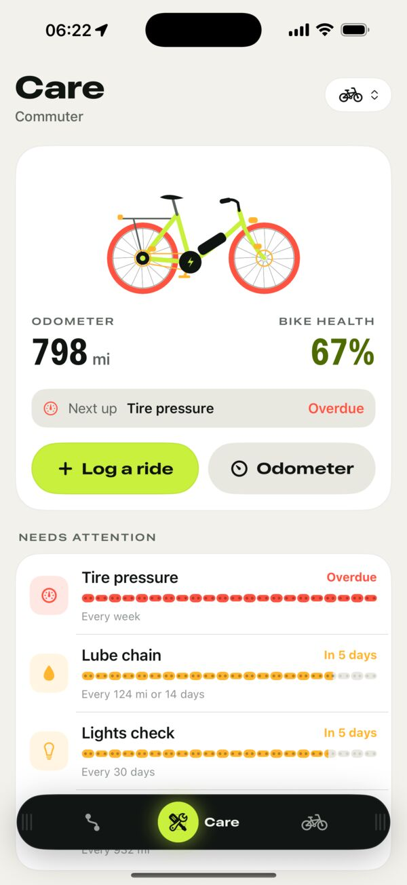
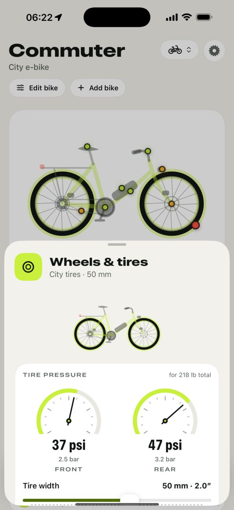
Honest ride times
Real physics for climbs and descents, expected waits at each traffic light, and your motor's push after every stop.
Routes your way
Weigh bike lanes, quiet streets, fewer lights, simple crossings, hills and surfaces. Star a route and it comes first next time.
Voice guidance
Spoken turns in your language and a chime before each turn. Music only dips while a direction is spoken.
Learns your lights
Waiting somewhere the map has no signal? Answer “red light?” on the lock screen or your wrist, and future times get sharper.
Beat the rain
An alert an hour before a wet commute, with the latest time to leave and stay dry, or when it clears.
Battery that plans ahead
Every route shows the charge you'll arrive with. When tomorrow's commute won't fit, you're told to plug in tonight.
Commute on autopilot
Set your office days and times: “Time to ride” arrives at departure, and one tap starts the ride on your usual route.
Every ride counts
Points, levels, streaks that only break on an office day without a ride, badges and personal records.
Apple Health
Rides saved as cycling workouts with route, distance, climbing and how hard they felt. Calories count your pedalling, not the motor.
A bike that lasts
Wear tracking and reminders for chain, brakes, tires and battery, plus tire pressure, saddle height, helmet fit and fix-it guides.
All your bikes
A city e-bike, a road bike, a cargo bike: each with its own motor, battery, weight and service history.
Your data stays yours
No account, no tracking. Bikes, rides and places are stored on your iPhone; nothing is sent to us.
Your ride on your wrist.
Start a ride on your iPhone and Pedalwise opens on your Apple Watch: the next turn with a tap on the wrist before it, speed, arrival time, battery and heart rate. Swipe up to mute the voice or end the ride. When you arrive, a summary shows distance, time and points, and the workout goes to Apple Health with heart rate zones.
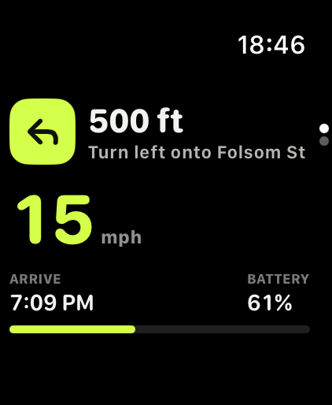
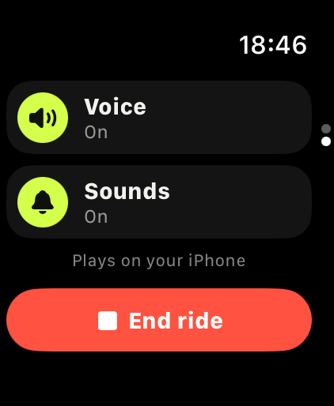
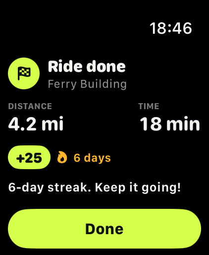
Support
How does Pedalwise estimate my ride time?
For every few dozen meters of a route, Pedalwise balances the power from your legs and motor against gravity, rolling resistance and air drag. Your motor's torque, peak power and legal assist limit, your weight and effort level, the street's surface and speed limit all count. It then adds the expected wait at each traffic light, crossings of bigger roads and turns. It's an estimate, not a promise: wind, traffic and how you feel that day still matter.
Why is it different from Google Maps or Apple Maps?
General map apps use one cycling speed for everyone and adjust it lightly for hills. That underestimates climbs on a regular bike and overestimates them on an e-bike, and usually ignores traffic lights. Pedalwise knows your bike.
Where does it work?
Routes are calculated from OpenStreetMap data, which covers cities and roads worldwide. Bike lanes, traffic lights and surfaces are as detailed as the local map; if detail is missing, Pedalwise tells you on the route.
Does it work with Apple Watch?
Yes. With Pedalwise on your Apple Watch, starting a ride on your iPhone opens it on your wrist with turns, speed, arrival, battery and heart rate. You can mute the voice and end the ride from the watch, and the workout is saved with heart rate when Apple Health is on.
How do the rain and commute reminders work?
Add Home, Work and your office days in Settings → Commute. An hour before a ride that looks wet you get a heads-up with the latest time to leave and stay dry, or when it clears. At your departure time, “Time to ride” starts the ride on your usual route with one tap. Ride home early and that evening's reminder doesn't come. Forecasts come from Apple Weather.
How accurate is the battery estimate?
Battery use comes from the motor power the model needs along the route, divided by your battery's usable capacity, and every finished ride lowers your estimate. Cold weather, an older battery, headwinds and frequent Turbo use reduce real range, so update the level whenever you look at your bike's display: tap the battery ring next to your bike on the map.
Does Pedalwise tell me to skip red lights?
No. By default, estimates assume you wait out every red light. In places where cyclists may legally yield instead of stopping, such as Idaho-stop laws or bike right-turn-on-red signs, you can tell Pedalwise and it shortens expected waits at small, quiet crossings. Always follow local traffic laws.
How do the subscription and free trial work?
Pedalwise Pro unlocks route planning, turn-by-turn navigation on iPhone and Apple Watch, and maintenance tracking. New subscribers get a 7-day free trial; after that the plan you chose renews monthly or yearly until you cancel. Switch between monthly and yearly in My Bike → Settings. Cancel any time in iPhone Settings → your name → Subscriptions at least 24 hours before the trial or period ends. Your bike profile, part guides and pressure calculator stay available without a subscription.
I subscribed but Pro isn't active.
Open My Bike → Settings → Restore while signed in to the same Apple Account you subscribed with. If it still doesn't work, email us and include the date of purchase (never your password or card details).
How do maintenance reminders know my distance?
Rides you finish in Pedalwise add their distance to your bike automatically. You can also log rides manually or type the odometer reading from your bike's display. Time-based tasks like tire pressure use the calendar.
Can I edit or delete a ride?
Yes. Open My Bike → Your rides, tap a ride for its details and choose Edit to change the name, date, distance or time, or to delete it. Its distance comes off your bike's odometer too.
Can I export a route to my bike computer?
Yes. Open a route's details and choose Export GPX to send it to Garmin, Wahoo, Komoot or any app that opens GPX files.
Still stuck?
Email hello@jelluna.com with your iPhone model, iOS version and what happened. We usually reply within two working days.